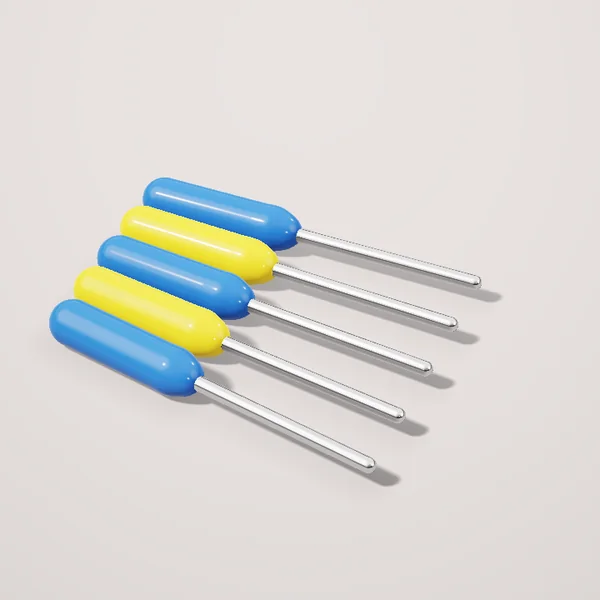

Набор бит и отвёрток, 32 предмета

от 76 000 сум / набор
Ручной инструмент из инструментальной стали для ежедневной работы.
- Единица
- набор
- Вес
- 0.48 kg
- Страна
- Турция
Доставка Яндекс по Ташкенту: курьер до 15 кг, грузовое такси для тяжёлых заказов. Самовывоз из магазина бесплатно.
Цены в магазинах
| Магазин | Цена | Наличие |
|---|---|---|
| Usta Market Чиланзарский | 76 000 сум | в наличии |
| Elektro Plus Сергелийский | 77 000 сум | в наличии |